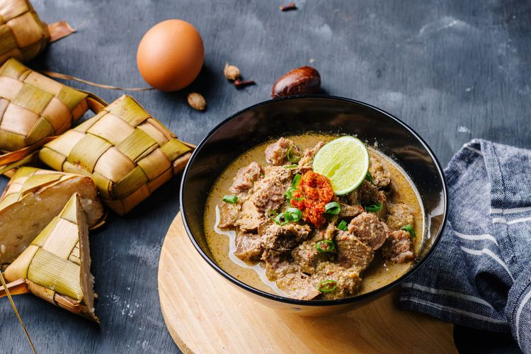
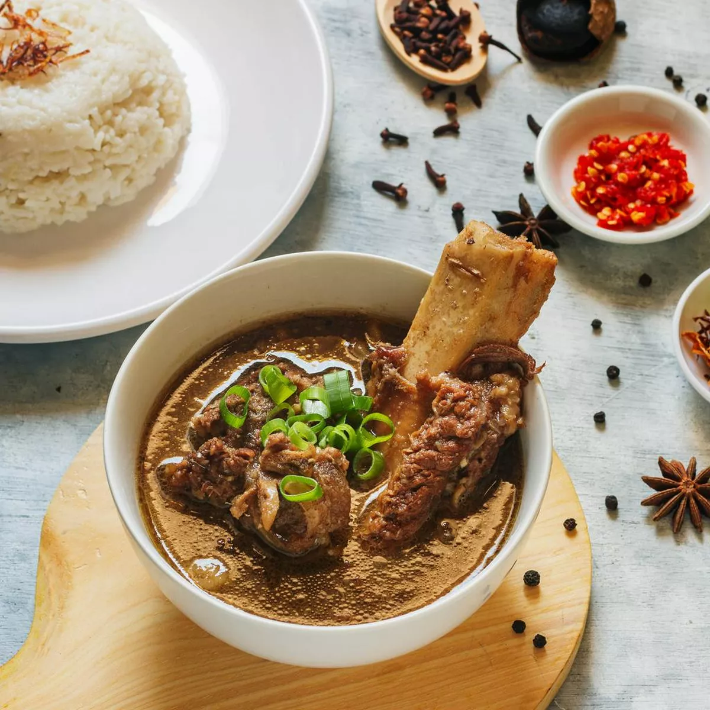
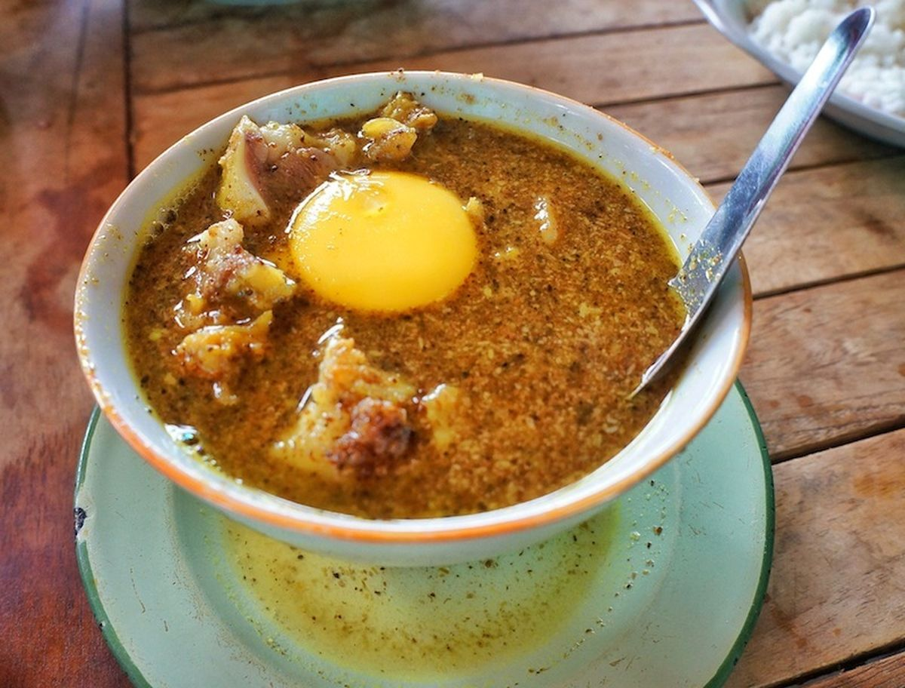

Coto Makassar
Coto Makassar, often simply referred to as "Coto," is a traditional soup from Makassar, South Sulawesi. This rich and savory dish is made from a blend of beef and various offals like heart, lungs, and intestines, simmered in a spice-infused broth. Key ingredients include garlic, shallots, ginger, galangal, and lemongrass, which give it a distinctive flavor. Coto is typically enjoyed with steamed rice or burasa, a type of compressed rice cake, and often accompanied by a spicy sambal tauco.
Sop Konro
Sop Konro is a traditional Indonesian beef rib soup originating from the Makassar region of South Sulawesi. It is made with tender beef ribs cooked in a rich, dark broth flavored with a variety of spices such as coriander, nutmeg, cinnamon, and tamarind, giving it a distinctive and aromatic taste. The soup is often served with rice or ketupat (rice cakes) and is known for its hearty, savory flavor, making it a popular dish in Makassar cuisine. Some variations of Konro are grilled, known as Konro Bakar, served with the same rich broth as a dipping sauce.
Pallubasa
Pallubasa is a traditional dish from Makassar, South Sulawesi, Indonesia, known for its rich and savory flavor. It consists of tender, slow-cooked beef or buffalo meat served in a thick, spiced broth made from a blend of coconut, spices, and herbs like coriander, cumin, and turmeric. Unlike its similar counterpart, Coto Makassar, Pallubasa is typically garnished with grated coconut and served with a raw egg yolk mixed into the broth. It's often enjoyed with rice rather than ketupat (rice cakes), making it a hearty and flavorful dish that is beloved in the region.